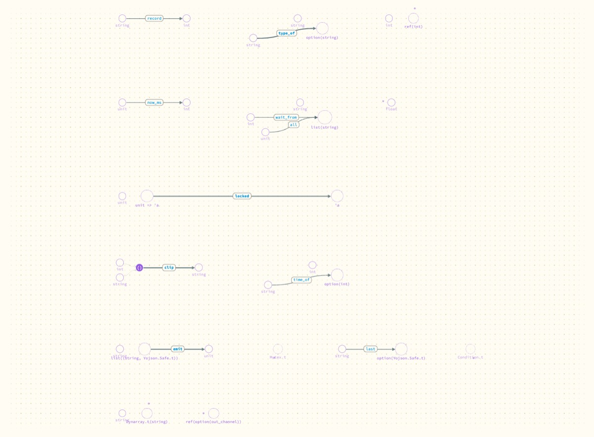
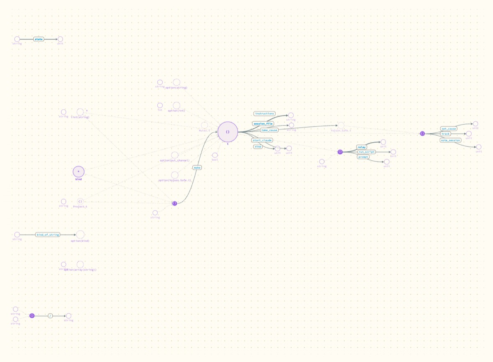
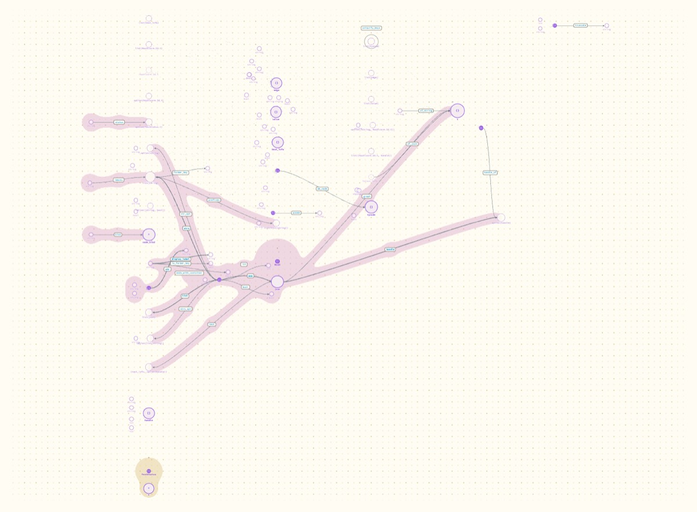

Do design smells show on the canvas?
Yes, several. Reading four of Portolan's own modules as pictures turned up six shapes that each meant something in the source.
- Why
Andrew looked at
CanvasGraph.edgeon the canvas and said it felt like a grab bag: lots of strings. He asked whether more substantive problems are visible the same way.- What I did
Ran Portolan on its own source and took a picture of four modules, one at a time, with the canvas as it is today:
Bus,Agent,CanvasGraphandGraph. I wrote down what each picture suggested, then read the source to see whether it was true.- Caveat
I wrote these modules, or reviewed them, a day earlier. I tried to read the pictures first, but I was not a fresh reader.
What happened

The picture has no named type in it at all. In the source, an event is JSON text in some functions and a list of fields in others, and its kind is a string. A type for events would be the node these arrows meet at. The loose values say the bus keeps its state in the module itself: there is one per process.

unit.Three of the optional parts are the input channel, the process id and the pending cause: together they are "running or not", written as fields that may be empty. The fan into unit says every function here acts and returns nothing, so none of it can be checked without starting a process.

edge, value and test_info, each in a cloud of string and bool. Centre: a blob of about a dozen small functions out of one type.The cloud around edge is the grab bag: its name, its label, its type, and the keys of the nodes it joins are all string. The blob is a set of JSON-reading helpers. Graph draws with the same blob and with records of the same names, because the graph record is defined once for the extractor and again for the canvas, and each reads the JSON itself.
The shapes
| On the canvas | What it was in the source | Seen in |
|---|---|---|
| Many small islands, built-in to built-in | No domain types: the functions share only string and int | Bus |
A fan of arrows into unit | Effects with no result | Agent |
A record with a ring of option parts | A state machine written as optional fields | Agent |
| Loose values of lock, counter and table types | Module-level state | Bus |
| The same blob of small helpers in two modules | A missing shared module | CanvasGraph, Graph |
| Records of the same name in two modules | One model defined twice | CanvasGraph, Graph |
- What it means
-
The scattered islands that make a module look badly laid out are partly the message. A layout that packs them neatly should not hide that they are unconnected.
What the picture could not tell me: the names of the loose values, which field each part of a record is, and which of the many
strings mean the same thing. Labels were too small to read without zooming. - Next
-
The six shapes are now a table at the end of the repository's
STYLE.md.Entry 6 will fix the first one (an event type for the bus) and compare the two pictures. The same could be done for the agent's state and the doubled graph record.
An idea, not started: the canvas could point these shapes out itself.